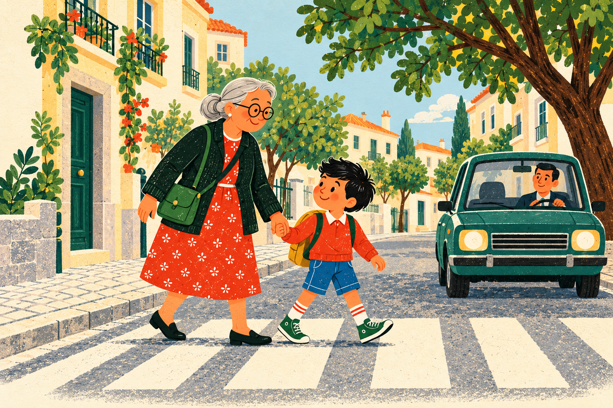

Civismo é o que fazes quando ninguém está a ver.
É o voto que dás, o vizinho de quem cuidas, a reunião em que participas, a lei que questionas. O civismo não é uma matéria que se estuda. É uma forma de viver que se pratica. Descobre o que significa, porque importa e como o pôr em prática.

Escolher um sítio
Escolhe um sítio e experimenta uma situação. Cada escolha abre uma explicação e um pequeno gesto para o dia a dia.
Uma palavra grande para a vida em comum
O civismo também envolve direitos, participação, diálogo e cuidado. Conhece as ideias por trás dos pequenos gestos.
Põe o teu civismo à prova
Já exploraste algumas situações? Experimenta dez perguntas que misturam escolhas do quotidiano e o que aprendeste.
Fazer o teste final